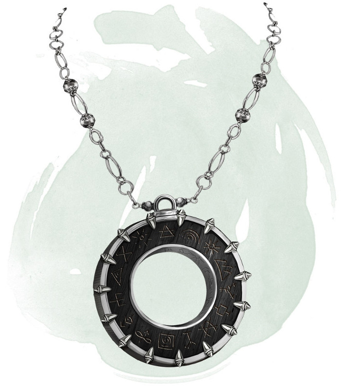

Amulet of the Planes
Wondrous item, very rare (requires attunement)
While wearing this amulet, you can use an action to name a location that you are familiar with on another plane of existence. Then make a DC 15 Intelligence check. On a successful check, you cast the plane shift spell. On a failure, you and each creature and object within 15 feet of you travel to a random destination. Roll a d100. On a 1-60, you travel to a random location on the plane you named. On a 61-100, you travel to a randomly determined plane of existence.
Dungeon Master´s Guide (SRD)
